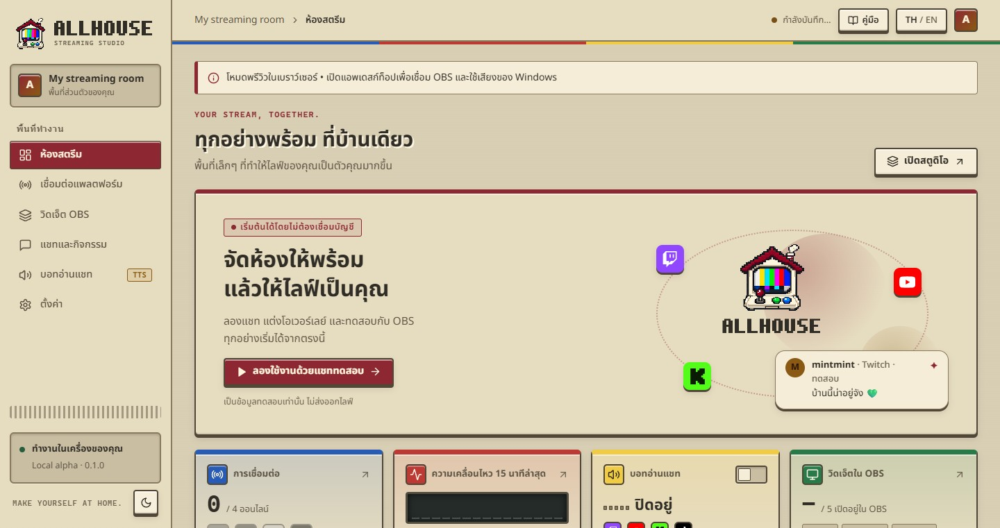

Allhouse รวมแชทและการแจ้งเตือนจาก Twitch, YouTube, Kick และ TikTok ไว้ที่เดียว แล้วส่งขึ้น OBS เป็นวิดเจ็ตที่แต่งได้เอง พร้อมบอทอ่านแชทภาษาไทยและอังกฤษ ทุกอย่างทำงานในเครื่องของคุณ
Allhouse brings chat and alerts from Twitch, YouTube, Kick and TikTok into one place, sends them to OBS as widgets you can style yourself, and reads chat aloud in Thai and English. Everything runs on your own computer.

ในแอพ กดปุ่ม คู่มือ ที่แถบด้านบนได้ทุกเมื่อ แอพจะเปิดหน้าคู่มือที่ตรงกับหน้าที่คุณดูอยู่
In the app, press Manual in the top bar at any time. It opens the manual page for the screen you are on.
Allhouse 0.1.0 · Local alpha · คู่มือนี้มากับแอพ เปิดได้แม้ไม่มีอินเทอร์เน็ตAllhouse 0.1.0 · Local alpha · This manual ships with the app and works offline